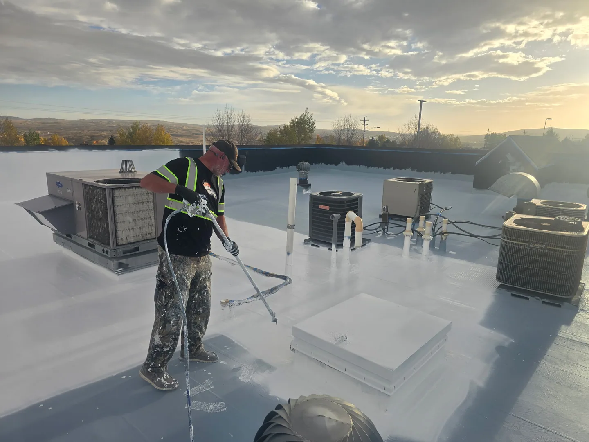
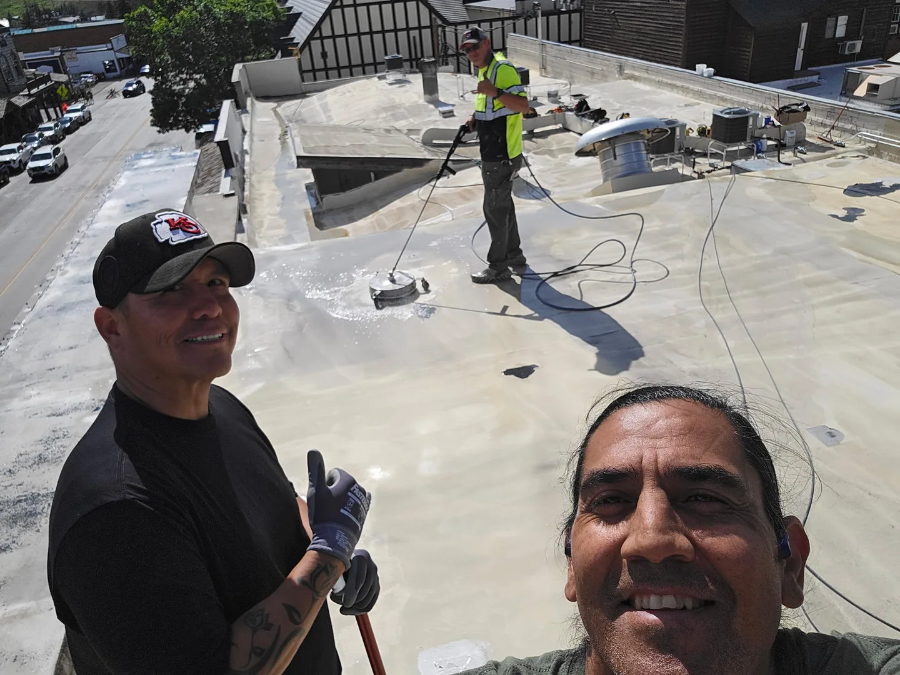

Metal and flat roof restoration
A leak around one vent may call for a repair. When seams are opening across a commercial roof, it’s worth looking at the whole system. We inspect the roof, show you what we find, and explain what it would take to restore it.

Can your roof be restored?
A leak in one spot
If water gets in around one seam or vent and the surrounding roof is sound, a targeted repair may be all the building needs.
Wear across the roof
If the finish is wearing away or seams are opening in several places, a sound, well-attached roof may be a good candidate for restoration.
Damage underneath
A coating can’t dry wet insulation or give a damaged deck its strength back. We identify what needs to come out before recommending a system.
Flat roof restoration
A flat roof has seams, inside corners, and equipment rising through its surface. We work fabric into wet base coat to reinforce those details. On roofs that call for it, a second layer of fabric stretches across the entire surface.

Inside a fabric-reinforced roof
Restoring a roof in Jackson




Planning the work
- What goes into the quote?
- Roof area is only the start. We look at access, existing repairs, surface condition, and how much work is needed around seams, drains, and equipment.
- Can my building stay open?
- Often the deciding factor is access. Tell us which entrances, loading bays, and rooftop equipment need to stay in use. We’ll work through those details with you before scheduling.
- Can my roof qualify for a 20-year warranty?
- Qualifying installations may be eligible for a limited manufacturer’s warranty of up to 20 years, subject to approval. We’ll go over the available term, what it covers, and the upkeep required for your roof.